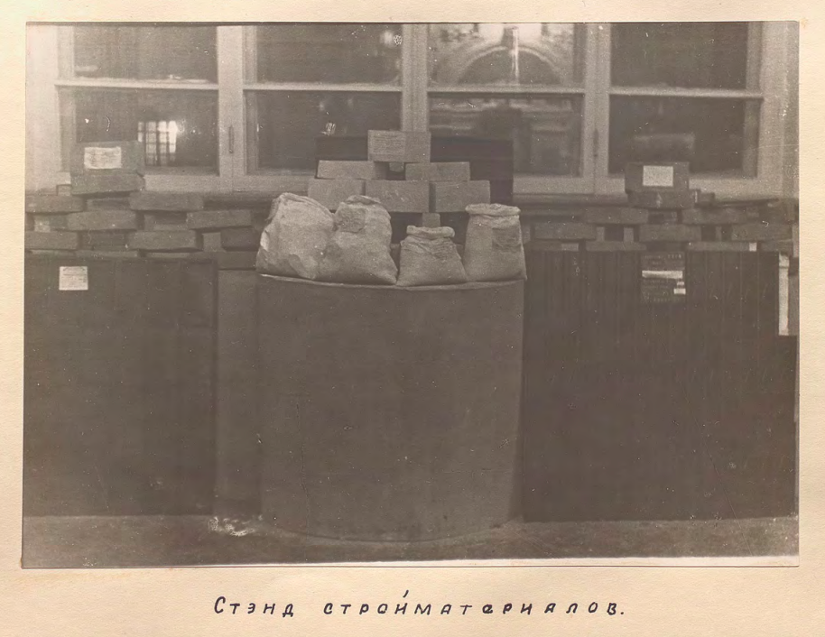

02.12.2019
борис арватов. музей утилитарного искусства

Публикуем малоизвестный текст Бориса Арватова с критикой современных ему музеев современного искусства и проектом Музея утилитарного искусства, где не будет ни одного вечного экспоната.